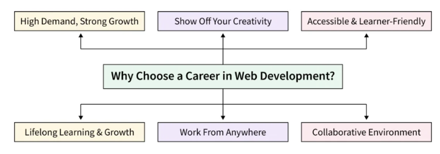

Why Learning Web Development is a Great Career Move in 2025?

- The Growing Demand for Web Developers
- Job Market Trends
- High Demand Across Industries
- Attractive Salaries and Career Growth
- Competitive Salaries
- Career Advancement Opportunities
- Flexibility and Remote Work Opportunities
- Freelancing Options
- Remote Job Opportunities
- Continuous Learning and Skill Development
- Evolving Technologies
- Access to Learning Resources
- Creative and Fulfilling Work
- Building Innovative Solutions
- Problem-Solving Challenges